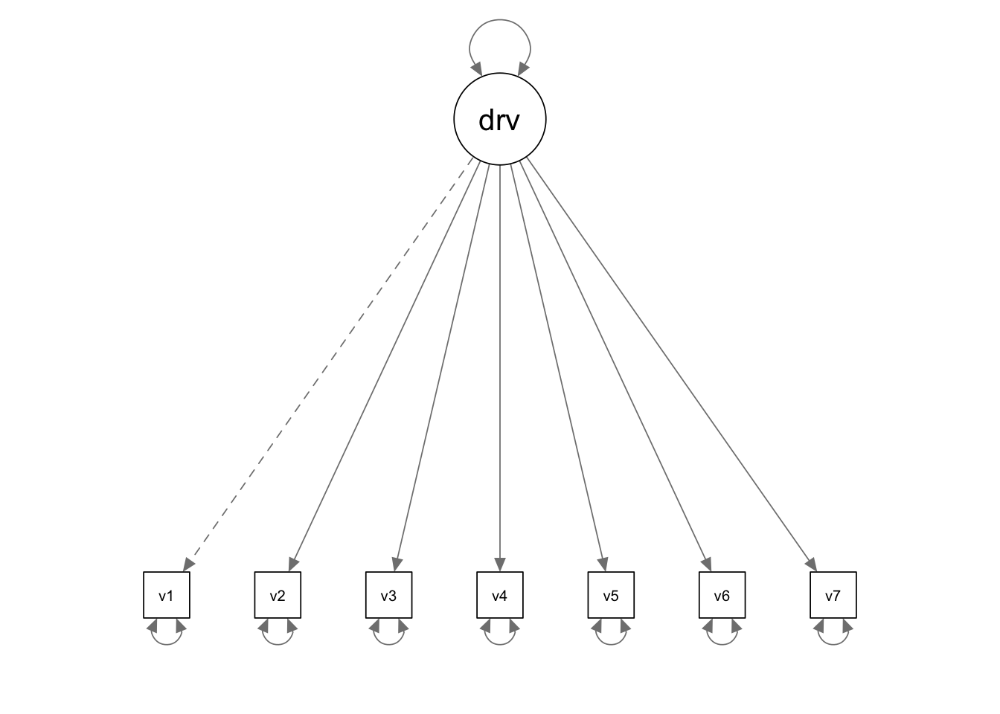

In this tutorial, we are going to use lavaan to deal with missing data. The example corresponds to the Eating Attitudes Test (EAT) example in your course slides.
library(lavaan)
library(semPlot)
library(semTools)The data for this example is saved in a txt file named “EARdata.txt”, which is provided as part of the course materials. You can use the read.delim() function to read in a txt file. There are many different ways for you to supply the file path in the read.delim() function call. Below I first set the working directory to the folder where my data is saved, and then I simply supply the name of the data file when calling the read.delim() function.
To specify the numeric values that should be interpreted as missing value, we use the na.strings = argument. In our example, -999999 representes missing value.
setwd(mypath) # change it to the path of your own data folder
eat <- read.delim("EATdata.txt", sep = "\t", header = F, na.strings = -999999)
# give variable names
colnames(eat) <- c(paste0("v",1:7), "bmi")You can take a look at the data and get the sample statistics.
# descriptive statistics
str(eat)## 'data.frame': 200 obs. of 8 variables:
## $ v1 : int 1 3 NA NA 1 2 1 2 1 NA ...
## $ v2 : int 2 3 1 1 1 6 2 3 3 4 ...
## $ v3 : int 1 6 2 1 1 5 NA 4 3 NA ...
## $ v4 : int 1 4 2 2 1 6 5 3 3 3 ...
## $ v5 : int 1 3 NA 1 1 5 3 2 3 3 ...
## $ v6 : int 1 3 2 1 1 3 1 3 3 2 ...
## $ v7 : int 1 3 NA NA 1 6 NA 3 3 NA ...
## $ bmi: num 23.9 22.3 25.1 25.2 19.5 ...summary(eat)## v1 v2 v3 v4 v5
## Min. :1.00 Min. :1.00 Min. :1.000 Min. :1.000 Min. :1.000
## 1st Qu.:1.00 1st Qu.:2.00 1st Qu.:2.000 1st Qu.:2.000 1st Qu.:1.000
## Median :2.00 Median :2.00 Median :3.000 Median :2.000 Median :2.000
## Mean :2.04 Mean :2.53 Mean :3.179 Mean :2.525 Mean :2.079
## 3rd Qu.:3.00 3rd Qu.:3.00 3rd Qu.:4.000 3rd Qu.:3.000 3rd Qu.:3.000
## Max. :5.00 Max. :6.00 Max. :6.000 Max. :6.000 Max. :5.000
## NA's :24 NA's :27 NA's :22
## v6 v7 bmi
## Min. :1.000 Min. :1.000 Min. :17.97
## 1st Qu.:1.000 1st Qu.:2.000 1st Qu.:20.92
## Median :2.000 Median :3.000 Median :22.33
## Mean :1.845 Mean :3.121 Mean :22.72
## 3rd Qu.:2.000 3rd Qu.:4.000 3rd Qu.:24.21
## Max. :5.000 Max. :6.000 Max. :38.39
## NA's :27cor(eat, use = "pairwise.complete.obs")## v1 v2 v3 v4 v5 v6 v7 bmi
## v1 1.0000000 0.5520118 0.5388666 0.4588289 0.5431495 0.4832800 0.5016210 0.1765866
## v2 0.5520118 1.0000000 0.6261893 0.6846634 0.5621047 0.4545896 0.6257324 0.2067362
## v3 0.5388666 0.6261893 1.0000000 0.6375152 0.5581759 0.4184480 0.4347233 0.1364165
## v4 0.4588289 0.6846634 0.6375152 1.0000000 0.6486606 0.5460844 0.6367483 0.2498646
## v5 0.5431495 0.5621047 0.5581759 0.6486606 1.0000000 0.4696770 0.5125524 0.2416601
## v6 0.4832800 0.4545896 0.4184480 0.5460844 0.4696770 1.0000000 0.4836573 0.1154936
## v7 0.5016210 0.6257324 0.4347233 0.6367483 0.5125524 0.4836573 1.0000000 0.2077288
## bmi 0.1765866 0.2067362 0.1364165 0.2498646 0.2416601 0.1154936 0.2077288 1.0000000
When your data contain missing values, by default lavaan will use listwise deletion. If it can be reasonably assumed that the missing data is MCAR or MAR, you can use full information maximum likelihood (FIML) estimation within lavaan. You just need to specify missing = "fiml" in the fitting function.
eat.model <- '
driveft =~ v1 + v2 + v3 + v4 + v5 + v6 + v7
'
eat.fit <- sem(eat.model, data = eat, missing = "fiml")
summary(eat.fit, fit.measures = T, standardized = T)## lavaan 0.6-8 ended normally after 29 iterations
##
## Estimator ML
## Optimization method NLMINB
## Number of model parameters 21
##
## Number of observations 200
## Number of missing patterns 16
##
## Model Test User Model:
##
## Test statistic 34.992
## Degrees of freedom 14
## P-value (Chi-square) 0.001
##
## Model Test Baseline Model:
##
## Test statistic 649.695
## Degrees of freedom 21
## P-value 0.000
##
## User Model versus Baseline Model:
##
## Comparative Fit Index (CFI) 0.967
## Tucker-Lewis Index (TLI) 0.950
##
## Loglikelihood and Information Criteria:
##
## Loglikelihood user model (H0) -1776.015
## Loglikelihood unrestricted model (H1) -1758.519
##
## Akaike (AIC) 3594.030
## Bayesian (BIC) 3663.295
## Sample-size adjusted Bayesian (BIC) 3596.764
##
## Root Mean Square Error of Approximation:
##
## RMSEA 0.087
## 90 Percent confidence interval - lower 0.051
## 90 Percent confidence interval - upper 0.123
## P-value RMSEA <= 0.05 0.046
##
## Standardized Root Mean Square Residual:
##
## SRMR 0.032
##
## Parameter Estimates:
##
## Standard errors Standard
## Information Observed
## Observed information based on Hessian
##
## Latent Variables:
## Estimate Std.Err z-value P(>|z|) Std.lv Std.all
## driveft =~
## v1 1.000 0.723 0.649
## v2 1.358 0.148 9.205 0.000 0.981 0.812
## v3 1.543 0.187 8.268 0.000 1.115 0.735
## v4 1.515 0.165 9.163 0.000 1.095 0.845
## v5 1.020 0.119 8.564 0.000 0.737 0.756
## v6 0.752 0.100 7.520 0.000 0.543 0.619
## v7 1.640 0.199 8.224 0.000 1.185 0.715
##
## Intercepts:
## Estimate Std.Err z-value P(>|z|) Std.lv Std.all
## .v1 2.041 0.082 24.872 0.000 2.041 1.833
## .v2 2.530 0.085 29.621 0.000 2.530 2.094
## .v3 3.259 0.112 29.128 0.000 3.259 2.147
## .v4 2.525 0.092 27.555 0.000 2.525 1.948
## .v5 2.098 0.071 29.506 0.000 2.098 2.151
## .v6 1.845 0.062 29.716 0.000 1.845 2.101
## .v7 3.142 0.122 25.738 0.000 3.142 1.897
## driveft 0.000 0.000 0.000
##
## Variances:
## Estimate Std.Err z-value P(>|z|) Std.lv Std.all
## .v1 0.717 0.085 8.488 0.000 0.717 0.579
## .v2 0.497 0.065 7.667 0.000 0.497 0.340
## .v3 1.061 0.132 8.054 0.000 1.061 0.460
## .v4 0.481 0.069 6.935 0.000 0.481 0.286
## .v5 0.408 0.051 7.983 0.000 0.408 0.429
## .v6 0.476 0.051 9.265 0.000 0.476 0.617
## .v7 1.338 0.163 8.192 0.000 1.338 0.488
## driveft 0.522 0.111 4.708 0.000 1.000 1.000To incorporate auxiliary variables, you will need to call up the auxiliary() function from the semTools package. As you can see from the output, the auxiliary variable “bmi” is correlated with the residual terms from the observed dependent variables, but not with the latent factor.
fit.aux <- auxiliary(eat.model, aux = "bmi", data = eat, estimator = "ML", missing = "FIML", fun = "sem")
summary(fit.aux, fit.measures = T)## lavaan 0.6-8 ended normally after 52 iterations
##
## Estimator ML
## Optimization method NLMINB
## Number of model parameters 30
##
## Number of observations 200
## Number of missing patterns 16
##
## Model Test User Model:
##
## Test statistic 34.931
## Degrees of freedom 14
## P-value (Chi-square) 0.002
##
## Model Test Baseline Model:
##
## Test statistic 648.397
## Degrees of freedom 21
## P-value 0.000
##
## User Model versus Baseline Model:
##
## Comparative Fit Index (CFI) 0.967
## Tucker-Lewis Index (TLI) 0.950
##
## Loglikelihood and Information Criteria:
##
## Loglikelihood user model (H0) -2248.398
## Loglikelihood unrestricted model (H1) -2230.932
##
## Akaike (AIC) 4556.796
## Bayesian (BIC) 4655.746
## Sample-size adjusted Bayesian (BIC) 4560.703
##
## Root Mean Square Error of Approximation:
##
## RMSEA 0.086
## 90 Percent confidence interval - lower 0.051
## 90 Percent confidence interval - upper 0.123
## P-value RMSEA <= 0.05 0.046
##
## Standardized Root Mean Square Residual:
##
## SRMR 0.029
##
## Parameter Estimates:
##
## Standard errors Standard
## Information Observed
## Observed information based on Hessian
##
## Latent Variables:
## Estimate Std.Err z-value P(>|z|)
## driveft =~
## v1 1.000
## v2 1.361 0.148 9.197 0.000
## v3 1.557 0.190 8.210 0.000
## v4 1.520 0.166 9.159 0.000
## v5 1.033 0.121 8.559 0.000
## v6 0.752 0.100 7.506 0.000
## v7 1.644 0.200 8.220 0.000
##
## Covariances:
## Estimate Std.Err z-value P(>|z|)
## bmi ~~
## .v1 0.448 0.242 1.851 0.064
## .v2 0.674 0.235 2.867 0.004
## .v3 0.870 0.360 2.413 0.016
## .v4 0.848 0.256 3.317 0.001
## .v5 0.740 0.218 3.400 0.001
## .v6 0.273 0.170 1.611 0.107
## .v7 0.905 0.363 2.496 0.013
##
## Intercepts:
## Estimate Std.Err z-value P(>|z|)
## .v1 2.039 0.083 24.558 0.000
## .v2 2.530 0.085 29.621 0.000
## .v3 3.270 0.115 28.554 0.000
## .v4 2.525 0.092 27.555 0.000
## .v5 2.116 0.072 29.293 0.000
## .v6 1.845 0.062 29.716 0.000
## .v7 3.153 0.124 25.424 0.000
## driveft 0.000
## bmi 22.719 0.190 119.832 0.000
##
## Variances:
## Estimate Std.Err z-value P(>|z|)
## .v1 0.719 0.085 8.499 0.000
## .v2 0.496 0.065 7.668 0.000
## .v3 1.061 0.132 8.051 0.000
## .v4 0.479 0.069 6.933 0.000
## .v5 0.409 0.052 7.934 0.000
## .v6 0.477 0.051 9.272 0.000
## .v7 1.338 0.163 8.194 0.000
## driveft 0.520 0.111 4.700 0.000
## bmi 7.189 0.719 10.000 0.000